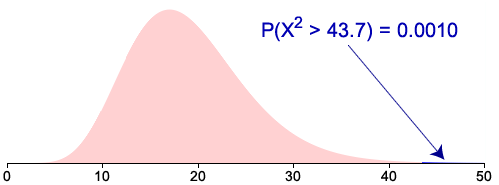

In most situations where data are modelled as a random sample from a normal distribution, the value of the distribution's mean, \(\mu\), is of most interest. Confidence intervals and hypothesis tests about \(\mu\) are therefore most commonly required.
Very occasionally, a test about the distribution's variance, \(\sigma^2\), is needed. This could be a one-tailed test such as
H0 : \(\sigma^2 = \sigma_0^2\)
HA : \(\sigma^2 \gt \sigma_0^2\)
where \(\sigma_0^2\) is some constant that depends on the specific test that the researchers are conducting, or a two-tailed test of the form
H0 : \(\sigma^2 = \sigma_0^2\)
HA : \(\sigma^2 \ne \sigma_0^2\)
Chi-squared test
The hypothesis test is based on the sample variance, \(S^2\), of a random sample of \(n\) values, and a test statistic can be defined from it. If the null hypothesis holds (and the normal distribution's variance is \(\sigma_0^2\)),
\[ X^2 \;=\; \frac {n-1}{\sigma_0^2} S^2 \]has a \(\ChiSqrDistn(n - 1\;\text{df})\) distribution.
The p-value for testing the value of \(\sigma^2\) can be found from a tail probability of this distribution.
Example
The following 20 values are a random sample from a \(\NormalDistn(\mu, \sigma^2)\) distribution.
| 18.68 | 16.28 | 26.02 | 21.57 | 20.54 | 19.45 | 24.55 | 23.03 | 19.34 | 24.69 |
| 21.31 | 15.22 | 22.81 | 20.53 | 21.01 | 14.98 | 20.52 | 22.39 | 23.37 | 23.23 |
Test whether the distribution's variance is \(\sigma^2 = 4\).
The sample variance of this data set is \(S^2 = 9.204\). The test statistic is therefore calculated to be
\[ x^2 \;=\; \frac {19}{2^2} \times 9.204 \;=\; 43.73 \]The probability of a value from a \(\ChiSqrDistn(19 \text{ df})\) distribution as high as this is
\[ P(X^2 \ge 43.73) \;=\; 0.0010 \]
Since a two-tailed test is required, the p-value is double this tail probability,
p-value = 0.002
Since the p-value is well below 0.01, we conclude that there is extremely strong evidence that the distribution's variance is not equal to 4.
Robustness
This tests in this section are all based on the assumption that the data are a random sample from a normal distribution. The t-test for the distribution's mean is not affected badly if the underlying distribution is non-normal, so we say that this test is robust.
However the chi-squared test test for the variance does not provide an accurate p-value if the distribution from which the data are sampled has a non-normal shape. This chi-squared test is not robust.